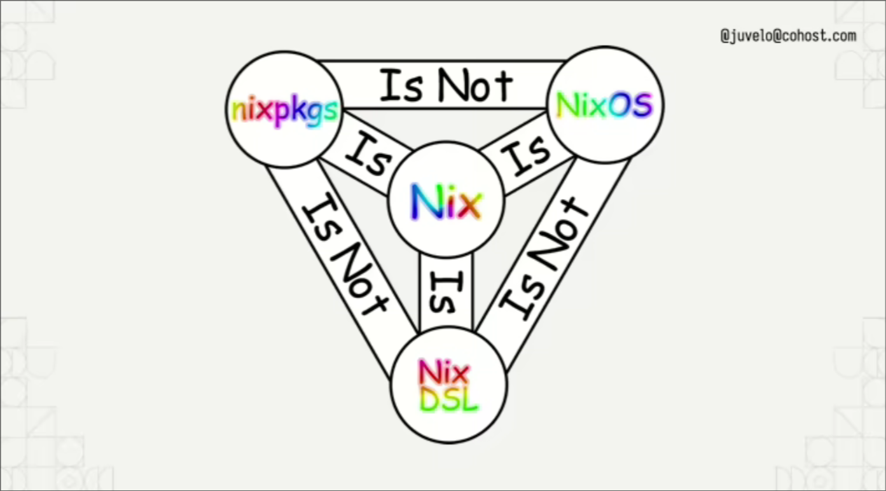

title: My Chapter date: 2025-11-21 author: saylesss88 description: Chapter 1
Chapter1
✔️ Click to Expand Table of Contents

Intro
Welcome to nix-book, an introductory book about Nix. This book leans more towards using Flakes but will contrast traditional Nix where beneficial. Originally, this content started as a blog. I’m refining its flow to make it more cohesive.
In this chapter, I will touch on the different parts of the Nix ecosystem, give a quick example of each and explain how they fit together.
- ✔️: Will indicate an expandable section, click the little triangle to expand.
- These sections are expandable!
The code blocks have an option to hide code, where I find it reasonable I will hide the outputs of the expressions. Click the eye in the right corner of the code block next to the copy clipboard.
Example click the eye to see hidden text:
{
attrset = { a = 2; b = 4; };
~ hidden_set = { a = hidden; b = set; };
}
❗ If you’re new to Nix, think of it as a recipe book for software: you describe what you want (declarative), and Nix ensures it’s built the same way every time (reproducible).
Why Learn Nix?
The main reason to learn Nix is that it allows you to write declarative scripts
for reproducible software builds. Rather than mutate the global state and
install packages to a global location such as /usr/bin Nix stores packages in
the Nix store, usually the directory /nix/store, where each package has its
own unique subdirectory. This paradigm gives you some powerful features, such
as:
-
Allowing multiple versions or variants of the same package at the same time. This prevents “DLL hell” from different applications having dependencies on different versions of the same package.
-
Atomic upgrades: Upgrading or uninstalling an application cannot break other applications and either succeed completely or fail completely preventing partial upgrades breaking your system. The nix store is immutable preventing package management operations from overwriting other packages. They wouldn’t overwrite each other anyways because the hashing scheme ensures that new versions or repeat packages end up at different paths.
-
Nix is designed to provide hermetic builds that aren’t affected by the environment, this helps you make sure that when packaging software that the dependencies are complete because they must be explicitly declared as inputs. With other package managers it is more difficult to be sure that an environment variable or something in your
$PATHisn’t affecting your build.
Let’s dive into the key characteristics of Nix:
| Concept | Description |
|---|---|
| Pure | Functions don’t cause side effects. |
| Functional | Functions can be passed as arguments and returned as results. |
| Lazy | Not evaluated until needed to complete a computation. |
| Declarative | Describing a system outcome. |
| Reproducible | Operations that are performed twice return same results |
❗ Important: In Nix, everything is an expression, there are no statements.
❗ Important: Values in Nix are immutable.
The Nix Ecosystem
The Nix Language is the foundation of the ecosystem and is used to write Nix Expressions.
Example of a simple nix expression:
{ hello = "world"; }
# or
"foo" + "bar"
While the Nix language provides the foundation for writing expressions, it is only part of the ecosystem. These expressions become powerful when used within the Nix Package Manager, which evaluates and realizes them into tangible software builds and system configurations. This is where Nixpkgs and NixOS come into play.
The Nix Package Manager, Nixpkgs, and NixOS
At the heart of the Nix ecosystem is Nix Package Manager. This powerful engine is responsible for orchestrating the entire process: taking Nix expressions (like package definitions and configuration modules), evaluating them into precise derivations, executing their build steps (the realization phase), and meticulously managing the immutable Nix store.
A cornerstone of the Nix ecosystem is Nixpkgs. This vast collection comprises tens of thousands of Nix expressions that describe how to build a wide array of software packages from source. Nixpkgs is more than just a package repository—it also contains NixOS Modules, declarative configurations that define system behavior, ensuring a structured and reproducible environment. These modules enable users to declaratively describe a Linux system, with each module contributing to the desired state of the overall system by leveraging package definitions and derivations. This is how NixOS emerges: it is quite simply the natural consequence of applying the Nix philosophy to building an entire Linux operating system.
We will further expand our understanding of modules in Chapter 3
The following is an example of a NixOS module that is part of the nixpkgs
collection:
# nixpkgs/nixos/modules/programs/zmap.nix
{
pkgs,
config,
lib,
...
}:
let
cfg = config.programs.zmap;
in
{
options.programs.zmap = {
enable = lib.mkEnableOption "ZMap, a network scanner designed for Internet-wide network surveys";
};
config = lib.mkIf cfg.enable {
environment.systemPackages = [ pkgs.zmap ];
environment.etc."zmap/blacklist.conf".source = "${pkgs.zmap}/etc/zmap/blacklist.conf";
environment.etc."zmap/zmap.conf".source = "${pkgs.zmap}/etc/zmap.conf";
};
}
- This module,
programs.zmap.nix, demonstrates how NixOS configurations work. It defines an enable option for the ZMap network scanner. If enabled by the user in their system configuration, the module ensures thezmappackage is installed and its default configuration files are placed in/etc, allowing ZMap to be managed declaratively as part of the operating system.-
When
nixpkgsis imported (e.g., in a NixOS configuration), the configuration options and settings defined by its modules (likeprograms.zmap.nix) become available for use, typically accessed via dot notation (e.g.,config.programs.zmap.enable). This ability to make such a huge set of modules and packages readily available without a significant performance penalty is due to Nix’s lazy evaluation; only the expressions required for a particular build or configuration are actually evaluated. -
Most of the time you’ll simply search to see if the package is already included in
nixpkgsand follow the instructions there to get it on your system. It is good practice to first search for the options to see what configurable settings are available, and then proceed to search for the package itself if you know it exists or if you need its specific package definition. When you look up the options for Zmap,programs.zmap.enableis all that is listed in this example. -
Home Manager uses the same underlying Nix module system as NixOS, and when you do something like home.packages = with pkgs; you are referring to the same package derivations from nixpkgs as you would with
environment.systemPackages. However, Home Manager’s own configuration modules (e.g., forprograms.zshorgit) are distinct and reside in the Home Manager repository, designed for user-specific configurations.
-
One of the main differentiating aspects of Nix, as opposed to traditional package managers, is this concept that package builds are treated as pure functions. This functional paradigm ensures consistency and reproducibility, which are core tenets of the Nix philosophy.

Fig. X: Conceptual diagram illustrating the distinction between Nix and NixOS. Source: xeiaso, from the blog post “Making NixOS modules for fun and (hopefully) profit”, https://xeiaso.net/talks/asg-2023-nixos/.
Nix expressions permeate the ecosystem—everything in Nix is an expression, including the next key components: package definitions and derivations.
Package Definitions & Derivations
Package Definitions are specialized expressions that tell Nix how to build software.
Example of a package definition:
# hello.nix
{pkgs ? import <nixpkgs> {}}:
pkgs.stdenv.mkDerivation {
pname = "hello";
version = "2.12.1";
src = pkgs.fetchurl {
url = "https://ftp.gnu.org/gnu/hello/hello-2.12.1.tar.gz";
sha256 = "086vqwk2wl8zfs47sq2xpjc9k066ilmb8z6dn0q6ymwjzlm196cd";
};
nativeBuildInputs = [pkgs.autoconf pkgs.automake pkgs.gcc];
configurePhase = ''
./configure --prefix=$out
'';
buildPhase = ''
make
'';
installPhase = ''
make install
'';
}
- Evaluation Phase:
Now when you run something like:
nix-instantiate hello.nix
warning: you did not specify '--add-root'; the result might be removed by the garbage collector
/nix/store/p2hbg16a9kpqgx2nzcsq39wmnyxyq4jy-hello-2.12.1.drv
- Nix evaluates the expression and produces a
.drvfile (the derivation), a precise JSON-like blueprint describing how the package will be built. It does not contain the built software itself.
- Realization Phase:
When you run:
nix-build hello.nix
#...snip...
shrinking RPATHs of ELF executables and libraries in /nix/store/53hqyw72dijq3wb5kc0ln04g681gk6cp-hello-2.12.1
shrinking /nix/store/53hqyw72dijq3wb5kc0ln04g681gk6cp-hello-2.12.1/bin/hello
checking for references to /build/ in /nix/store/53hqyw72dijq3wb5kc0ln04g681gk6cp-hello-2.12.1...
gzipping man pages under /nix/store/53hqyw72dijq3wb5kc0ln04g681gk6cp-hello-2.12.1/share/man/
patching script interpreter paths in /nix/store/53hqyw72dijq3wb5kc0ln04g681gk6cp-hello-2.12.1
stripping (with command strip and flags -S -p) in /nix/store/53hqyw72dijq3wb5kc0ln04g681gk6cp-hello-2.12.1/bin
/nix/store/53hqyw72dijq3wb5kc0ln04g681gk6cp-hello-2.12.1
-
Nix realizes the derivation by actually executing the build steps, fetching sources, compiling (if needed), and producing the final result (typically stored in e.g.
/nix/store/53hqyw72dijq3wb5kc0ln04g681gk6cp-hello-2.12.1) -
nix-buildalso creates a symlink namedresultin your current directory, pointing to the final build output in the Nix store.
- Execute the program:
./result/bin/hello
Hello, world!
result/bin/hello points to the executable inside the output of the
derivation.The derivation describes how the package is built, but does not
include the final binaries.
To say that another way, the derivation is not the executable. The executable is
one of the derivations outputs. When Nix “realizes” a derivation, it executes
those build instructions, and the result is the actual built software, which
gets placed into its own unique path in the Nix store.
A single derivation can produce multiple outputs. The executable is typically
part of the out output, specifically in its bin directory.
Here is a small snippet of what a .drv file could look like, I got this from
building the hello derivation and running the following on the store path:
nix show-derivation /nix/store/9na8mwp5zaprikqaqw78v6cdn1rxac7i-hello-2.12.1
{
"/nix/store/871398c9cbskmzy6bvfnynr8yrlh7nk0-hello-2.12.1.drv": {
"args": [
"-e",
"/nix/store/v6x3cs394jgqfbi0a42pam708flxaphh-default-builder.sh"
],
"builder": "/nix/store/1jzhbwq5rjjaqa75z88ws2b424vh7m53-bash-5.2p32/bin/bash",
"env": {
"__structuredAttrs": "",
"buildInputs": "",
"builder": "/nix/store/1jzhbwq5rjjaqa75z88ws2b424vh7m53-bash-5.2p32/bin/bash",
"cmakeFlags": "",
"configureFlags": "",
"depsBuildBuild": "",
"depsBuildBuildPropagated": "",
"depsBuildTarget": "",
"depsBuildTargetPropagated": "",
"depsHostHost": "",
"depsHostHostPropagated": "",
"depsTargetTarget": "",
"depsTargetTargetPropagated": "",
"doCheck": "",
"doInstallCheck": "",
"mesonFlags": "",
"name": "hello-2.12.1",
"nativeBuildInputs": "",
"out": "/nix/store/9na8mwp5zaprikqaqw78v6cdn1rxac7i-hello-2.12.1",
"outputs": "out",
"patches": "",
"pname": "hello",
"propagatedBuildInputs": "",
"propagatedNativeBuildInputs": "",
"src": "/nix/store/pa10z4ngm0g83kx9mssrqzz30s84vq7k-hello-2.12.1.tar.gz",
"stdenv": "/nix/store/80wijs24wjp619zmrasrh805bax02xjm-stdenv-linux",
"strictDeps": "",
"system": "x86_64-linux",
"version": "2.12.1"
},
# ... snip ...
Conclusion
In this introductory chapter, we’ve laid the groundwork for understanding the
powerful Nix ecosystem. We explored how the Nix Language forms the declarative
bedrock, enabling us to define desired system states and software builds as
expressions. You saw how the Nix Package Manager orchestrates this process,
transforming those expressions into precise derivations during the evaluation
phase, and then faithfully “realizing” them into reproducible, isolated
artifacts within the immutable /nix/store.
We also introduced the vast Nixpkgs collection, which provides tens of thousands of package definitions and forms the foundation for NixOS — a fully declarative operating system built on these principles—and even user-level configurations like those managed by Home Manager. This unique functional approach, with its emphasis on immutability and lazy evaluation, is what enables Nix’s promises of consistency, atomic upgrades, and truly hermetic builds, fundamentally changing how we think about software and system management.
Related Sub-Chapters
Now that you have a foundational understanding of the Nix ecosystem and its core operational cycle, we are ready to delve deeper into the building blocks of Nix expressions. In the next chapter, Understanding Nix Functions, we will peel back the layers and explore the intricacies of function arguments, advanced patterns, scope, and how functions play a crucial role in building more sophisticated Nix expressions and derivations.
Here are some resources that are helpful for getting started:
Resources
✔️ Resources (Click to Expand)
-
Nix Core Ecosystem, Nix, NixOS, Nix Lang, Nixpkgs are all distinctly different; related things which can be confusing for beginners this article explains them.
-
nixpkgs: Vast package repository
-
Nix Reference Manual Data Types The main Data Types you’ll come across in the Nix ecosystem
-
nix.dev: Has become the top respected source of information in my opinion. There is a lot of great stuff in here, and they actively update the information.